"Dark Souls Remastered" Wikipedia
1 / 17
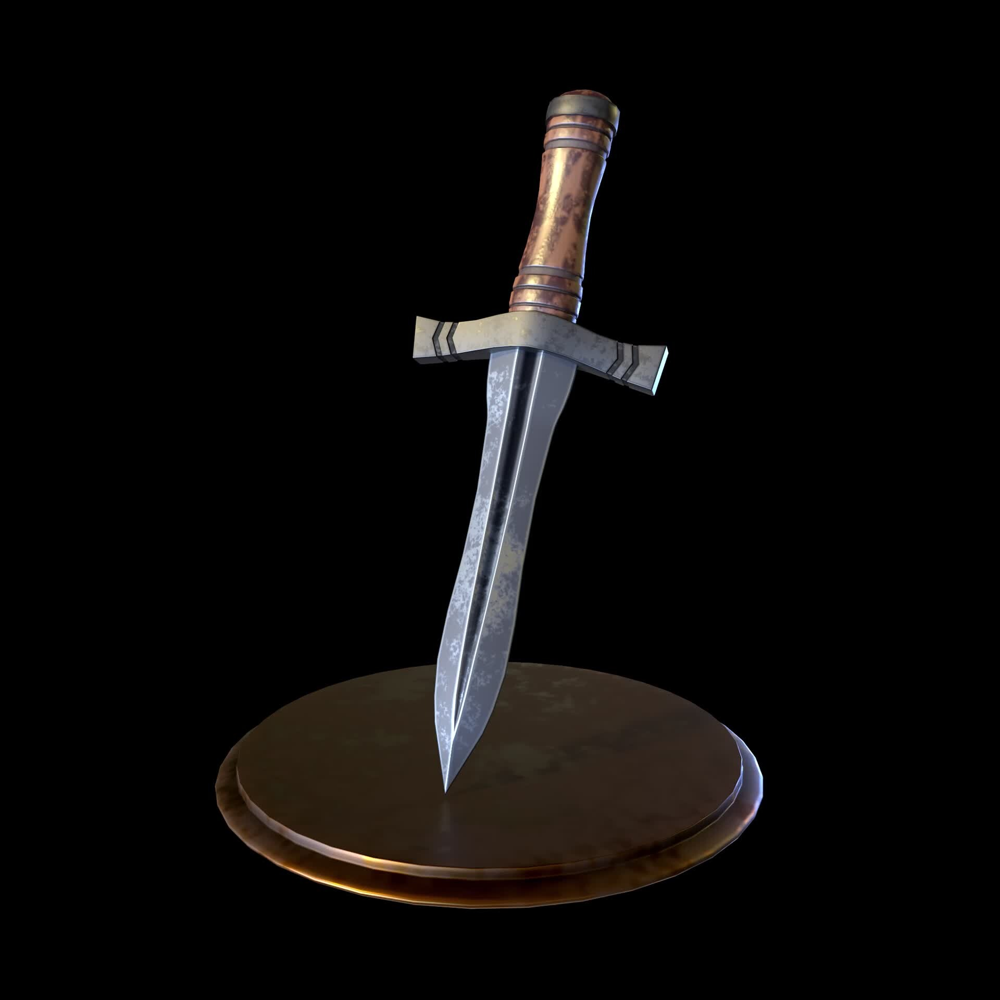
Daggers are a Weapon Category in Dark Souls and Dark Souls Remastered. Daggers have
short reach and
deliver
fast and precise attacks, enabling players to dodge and land successive strikes to stagger the
enemy
even in
close quarters. These weapons have two basic Damage Types: Thrust and Slash. They generally have
good
Dexterity Scaling and high critical damage. Daggers can also be wielded as left-handed weapons
and
used
to
Parry. Daggers are a great option for those wanting to apply Crystal Magic Weapon and Rotten
Pine
Resin.
Pros: Lightweight, Fast, can Parry, good Dex scaling and Critical. Useful in narrow spaces.
Cons: Low per-hit Damage, very short Range, limited selection of Weapons.
2 / 17
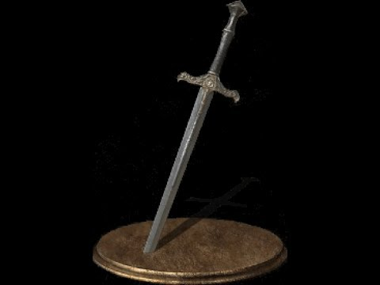
Straight Swords are a Weapon Category in Dark Souls and Dark Souls Remastered.
Straight Swords have increased damage and reach, but are relatively slow when compared to
Daggers.
Although the swing speed is slower, the additional range makes up for it, and Straight Swords
are a
great choice for attacking multiple opponents with one fast swing motion. Higher base Physical
damage balances out lesser Dexterity scaling and Critical Damage. Straight Swords are an ideal
weapon for players willing to strike a balance between Attack Rating and Speed in their builds.
Pros: Well-rounded weapon profile, light, with good range, decent damage and low Stamina
consumption. Useful for attacking multiple opponents with horizontal slashes.
Cons: Mediocre overall scaling and low Dexterity scaling which affects Critical Damage Hit.
3 / 17
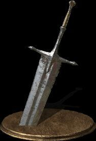
Greatswords are a Weapon Category in Dark Souls and Dark Souls Remastered.
Greatswords
are powerful blades with a wide swing radius and long reaching attacks, enabling the wielder to
target multiple opponents within the radius of the swing motion. As a balancing factor, these
weapons are considerably heavier, resulting in slower attacks and requiring more stats and more
effort to swing. Given the strength and range of these sweeping attacks, Greatswords can stagger
enemies long enough to land another strike/hit.
Pros: High Attack Power, wide swing radius, decent scaling, tolerable stat requirements, potent
when
two-handed.
Cons: Bad critical hit chance, heavy, slow, and tricky to use in small spaces such as corridors
due
to the weapon's size.
4 / 17

Ultra Greatswords are a Weapon Category in Dark Souls and Dark Souls Remastered.
Ultra
Greatswords are heavy weapons and require a considerable strength investment to wield. Their
swings
are slow but far-reaching, wide and extremely powerful, capable of stunning enemies caught in
the
hit. Ultra Greatsword users can therefore perform several stun-lock combos, missing an attack
however leaves the wielder wide open for enemy retaliation. This weapon class has the highest
physical damage reduction and stability when used for blocking incoming hits.
5 / 17
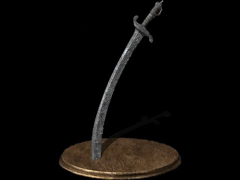
Curved Swords are a Weapon Category in Dark Souls and Dark Souls Remastered.
Curved
Swords are fast, medium range weapons similar to Straight Swords but are focused on Dexterity
Scaling, and feature a fluid moveset. Most of these weapon have 2 basic damage types: Slash and
Thrust. They are suitable for narrow spaces as enemies will have trouble moving around to dodge
or
block the fast moving attacks. All Curved Swords kick move is replaced with an evasive slash
attack
that causes the wielder to flip away after a swift strike. Thanks to their attack speed, Curved
Swords are a great option for players wanting to apply weapon buffs like Darkmoon Blade or
Rotten
Pine Resin.
Pros: Lightweight, high attack speed and low Stamina consumption, good Dexterity scaling. Useful
in
narrow spaces.
Cons: Ineffective against heavy armor and shields, lesser reach than Short Swords.
6 / 17
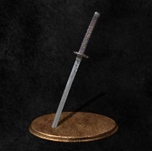
Katanas are a Weapon Category in Dark Souls and Dark Souls Remastered. Katanas are
fast-swinging weapons for their long range of motions. Dealing Slash and Thrust damage, Katanas
can
also inflict Bleed. The inherent sharpness of the blade has the disadvantage of having low
durability. Katanas are primarily Dexterity weapons that can also be wielded as left-handed
weapons
and used to Parry.
Pros: Far-reaching and fast swing motions, dealing mainly Slash damage, with added Bleed. Great
Dexterity scaling, moderate weight. Can be used to parry.
Cons: Poor durability, limited selections
7 / 17

Piercing Swords are a Weapon Category in Dark Souls and Dark Souls Remastered.
Piercing Swords are long and thin blades specifically focused on thrust and counter combat. They
are
a good choice for attacking heavy armored foes, as their attacks will break Poise and deal
critical
damage. These swords have a unique and fast moveset enables players to execute rapid consecutive
attacks, further enhanced by the kick moveset which is a horizontal swipe attack that enable
players
to reach farther. Piercing Swords can also be wielded in the left-hand, used to parry.
Pros: Lightweight. Good Dexterity scaling. Deals fast thrust damage, very high critical damage,
can
parry easier, break block and poise, and has an aggressive far-reaching moveset
Cons: Low attack power, limited choice, only Thrust Damage.
8 / 17
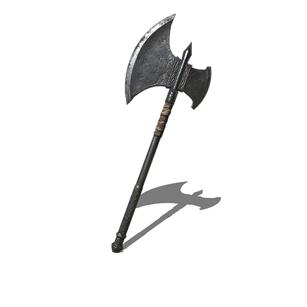
Axes are a Weapon Category in Dark Souls and Dark Souls Remastered. Axes are
weapons
with a wide medium-range arc attack motion. They provide hard hitting attacks that deal very
high
damage at the expense of swing speed. Larger axes require players to consider each attack
wisely, as
missing will leave you open to enemy counters. Its wide arc swing makes it unsuitable for use in
small confined spaces as attacks get interrupted when hitting a wall.
Pros: Deals heavy Poise damage which stunlock targets, high Attack Power and good moveset
against
groups of enemies.
Cons: Heavy, slow attack animation with risk of counters when missing, unremarkable scaling.
9 / 17
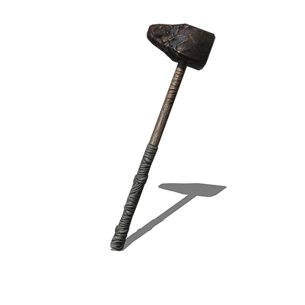
Hammers are a Weapon Category in Dark Souls and Dark Souls Remastered. Hammers can
attack quickly with powerful strikes but have the disadvantage of long recovery times that leave
the
player open to enemy counters when a hit does not connect. Most of these weapon have 2 basic
damage
types, strike and thrust attacks. Hammers share attack animations and playstyle with Axes and
Great
Axes. However, Hammers generally deal higher damage to armored enemies or foes comparing axes,
and
their blunt force is ideal against skeletons. These weapons focus on a successful first strike,
as
the force of the heavy blow can break the opponents guard, staggering the enemy and providing an
opening for a stunlock combo.
Pros: Good Strength Scaling. Moderate weight vs other heavy weapons. Quick follow up attack
animation if the first strike connects. Extremely efficient in breaking Poise, can stunlock
targets,
deals poise damage and effective Strike damage against certain enemies and players in heavy
armor.
Cons: Slow first swing and long recovery times, leaving players open to counters.
10 / 17
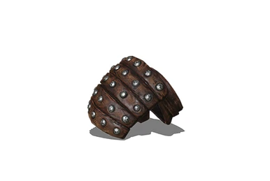
Fists are a Weapon Category in Dark Souls and Dark Souls Remastered. Fists have
the
shortest range among the weapons in the game, forcing players into very close range melee
combat.
The weapons are extremely fast and consume little stamina, allowing for long combos that can
break
enemies' guard or deplete their stamina. This strategy is useful in PvE but not in PvP as other
players will be able to parry the predictable fast repeating combo. These weapons can be wielded
in
the left hand or the right hand, each with different effects. Left-handing them grants the
ability
to parry whilst wielding fists in the right hand will replace the regular kick animation with
knee
strikes.
Pros: Very lightweight, deals fast rapid combo damage consuming little stamina, undeflectable
damage
can break poise. Useful in narrow spaces. Good scaling.
Cons: Very short range, low attack power and limited selection.
Recommendations: Have plenty of stamina and low equip load to improve your recovery. Good to
couple
with Gauntlets of Thorns to increase your damage output.
11 / 17
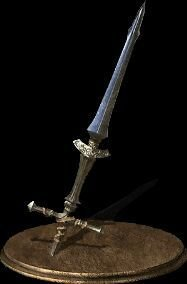
Spears are a Weapon Category in Dark Souls and Dark Souls Remastered. Spears are
fast
long-reaching weapons that deal Thrust Damage. They are excellent for players who like a
defensive
approach, as they can attack while blocking. Spears are also good for counter-play as they can
be
effective for interrupting enemy attacks thanks to being relatively fast. The spear stabbing
animation is precise but predictable, making it easy to block and unsuitable to engage against
opponents with small hitboxes or high mobility.
Pros: Light weight for long range, moderate Attack Power, good counter damage and deals poise
damage.
Cons: Mediocre scaling. Bad vs shields and predictable move set; can be parried easily.
12 / 17
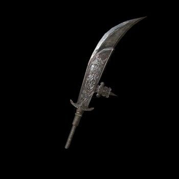
Halberds are a Weapon Category in Dark Souls and Dark Souls Remastered. Halberds
are
somewhat slower versions of spears with a similar moveset and range. These weapons have powerful
attacks with several Damage Types, making them a well-rounded choice for a main weapon. Since
Halbers are relatively slow and sweeping in their motions, players should place their attacks
carefully to avoid the lengthy recovery times. Halberds can also be paired with items such as
the
Leo Ring to increase their damage output.
Pros: Moderate weight, very long range, high Attack Power (same as Greatswords), sweeping and
thrust
movesets provide shield and two-hand variety.
Cons: Mediocre scaling for the lighter halberds, recovery time leaves users open to counter
attacks.
Recommendations: Use leo Ring to increase damage.
13 / 17
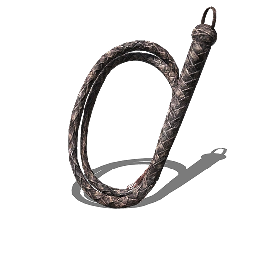
Whips are a Weapon Category in Dark Souls and Dark Souls Remastered. Whips are
fast,
long range weapons that deal decent damage within a large radius. They are capable of stunning
targets for a long period of time which makes them good against Skeletons and other agile
opponents.
Whips can also be used left-handed in order to parry. Despite not being able to do combos, whips
are
fast enough that each separate swing comes quickly and chains together. These weapons are unique
as
they cannot be parried, but this comes with the downfall of the wielder not being able to do
backstab, riposte, or plunging attacks. A unique aspect of whips is that they don't show any
signs
of their augmentations until they are performing an attack. This is only useful for PvP.
Pros: Lightweight, fast, excellent attack arc, reliable damage, cannot be parried, good against
multiple enemies. Excellent Dexterity scaling.
Cons: Poor against any kind of armor, cannot perform backstabs, ripostes or plunging attacks.
14 / 17
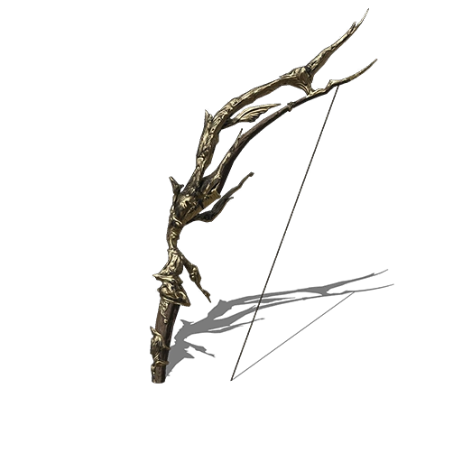
Bows are a Weapon Category in Dark Souls and Dark Souls Remastered. Bows are
long-ranged weapons that necessitate Arrows to function and possess no melee capability. There
are 2
types of bows; short bows and long bows, each with their own unique firing animations and
mechanics.
Short bows are well suited for PvP as they have a high firing rate (High Damage Per Second).
Long
bows are well suited for PvE, where they can snipe an opponents from long and safe distance.
Reloading is slower for longbows, making them less adequate for closer enemies such as PvP.
These
weapon scale well with Dexterity.
Pros: Short Bows; Fast firing rate, good scaling with dexterity and good for PVP. Long Bows;
Longer
Range than Short Bows, good scaling with dexterity and good for PvE.
Cons: Short Bows; Not as long range as Long bows. Long Bows; Takes time reloading arrow, lower
firing rate and deals less damage than Short bows.
Note: At high levels in Faith, Divine and Occult upgrade bows using Moonlight Arrows deal more
damage than the Darkmoon Bow.
15 / 17
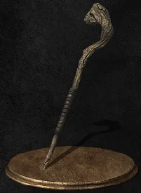
Catalysts are a Weapon Category that enables players to cast Sorceries in Dark
Souls
and Dark Souls Remastered. Catalysts are equipped on a weapon slot, allowing for the casting of
Sorceries and dealing Strike or Thrust Damage depending the types of Sorceries used. (to cast
Sorceries, press R1/RB or L1/LB).
Magic Adjustment (Mag Adj) is a special stat unique to spell casting weapons, and determines the
amount of damage spells will do. Its potency scales with the relevant character Stat
(Intelligence,
Int; or Faith, Fth). The higher the Mag Adj, the stronger the spell's effect (note: some spells,
such as Chameleon, are not affected by this stat). Be aware that the Mag Adj on different
catalysts
will scale differently. Specifically, they have different: base Mag Adj, max Mag Adj, and
scaling.
As some catalysts are meant to be used at lower levels (Oolacile, for example), they will reach
their optimal scaling level sooner than those meant to be higher level catalysts (Logan's).
Points to note:
Mag Adjust is the only stat that affects spell's damage.
Mag Adjust is the scaling bonus comes from Intelligence and Faith.
Please see: Intelligence and Faith Catalyst Magic Adjustment Value
16 / 17
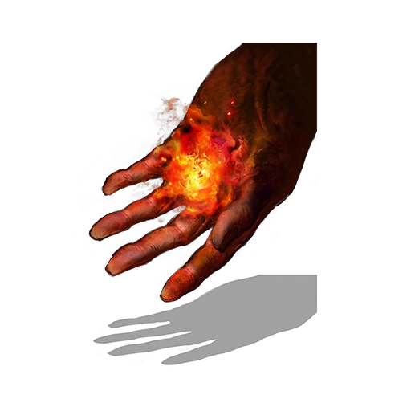
Flames are a Weapon Category that allows players to to cast Pyromancies in Dark
Souls
and Dark Souls Remastered.
Magic Adjustment (Mag Adj) is a special stat unique to spell casting weapons, and determines the
amount of damage spells will do. Its potency scales with the relevant character Stat
(Intelligence,
Int; or Faith, Fth). The higher the Mag Adj, the stronger the spell's effect (note: some spells,
such as Chameleon, are not affected by this stat). Be aware that the Mag Adj on different
catalysts
will scale differently. Specifically, they have different: base Mag Adj, max Mag Adj, and
scaling.
As some catalysts are meant to be used at lower levels (Oolacile, for example), they will reach
their optimal scaling level sooner than those meant to be higher level catalysts (Logan's).
Points to note:
MagAdjust is the only stat that affects spell's damage.
MagAdjust's scaling bonus comes from Intelligence and Faith
17 / 17
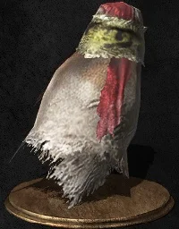
Talismans are a Weapon Category that enables players to cast Miracles in Dark
Souls
and Dark Souls Remastered.
Magic Adjustment (Mag Adj) is a special stat unique to spell casting weapons, and determines the
amount of damage spells will do. Its potency scales with the relevant character Stat
(Intelligence,
Int; or Faith, Fth). The higher the Mag Adj, the stronger the spell's effect (note: some spells,
such as Chameleon, are not affected by this stat). Be aware that the Mag Adj on different
catalysts
will scale differently. Specifically, they have different: base Mag Adj, max Mag Adj, and
scaling.
As some catalysts are meant to be used at lower levels (Oolacile, for example), they will reach
their optimal scaling level sooner than those meant to be higher level catalysts (Logan's).
Points to note:
MagAdjust is the only stat that affects spell's damage.
MagAdjust is the scaling bonus comes from Intelligence and Faith
Faith and Intelligence Talisman Magic Adjustment Values.
Para más información sobre Dark Souls: Remastered, visite los siguientes enlaces: